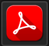

La finestra di stampa è la stessa per tutti i report: archivi, ordini, statistiche.
Sono presenti quattro pulsanti per lanciare la stampa sui diversi dispositivi. Le impostazioni di stampa da utilizzare vengono selezionate nella casella di selezione presente sotto i pusanti.
| Pulsante | Funzione | Note |
|---|---|---|
| Anteprima di stampa | Visualizza l'anteprima a video della stampa richiesta | |
 |
Stampa con richiesta stampante | Stampa il report direttamente su stampante richiedendo il dispositivo da utilizzare |
| Stampa immediata | Lancia la stampa direttamente sul dispositivo indicato in Opzioni → Stampa immediata su | |
 |
Esporta su PDF | Crea un file PDF per il report selezionato in base ai parametri presenti in Opzioni → Esporta su file PDF |
La finestra presenta sempre quattro linguette:
La linguetta Parametri viene disabilitata se il report selezionato non richiede parametri.
La linguetta Personalizza è visibile e disponibile solo per gli utenti che possono modificare report.
In Metodo di stampa / Classe del report / Report si sceglie il report fra quelli della classe: per esempio i report degli articoli o le diverse statistiche. Ogni report ha i suoi Parametri, i suoi Filtri e il suo ordinamento.
Nella scheda Personalizza si salvano parametri, filtri e ordinamento usati spesso, con un nome:
La scheda è disponibile solo agli utenti che possono modificare i report.